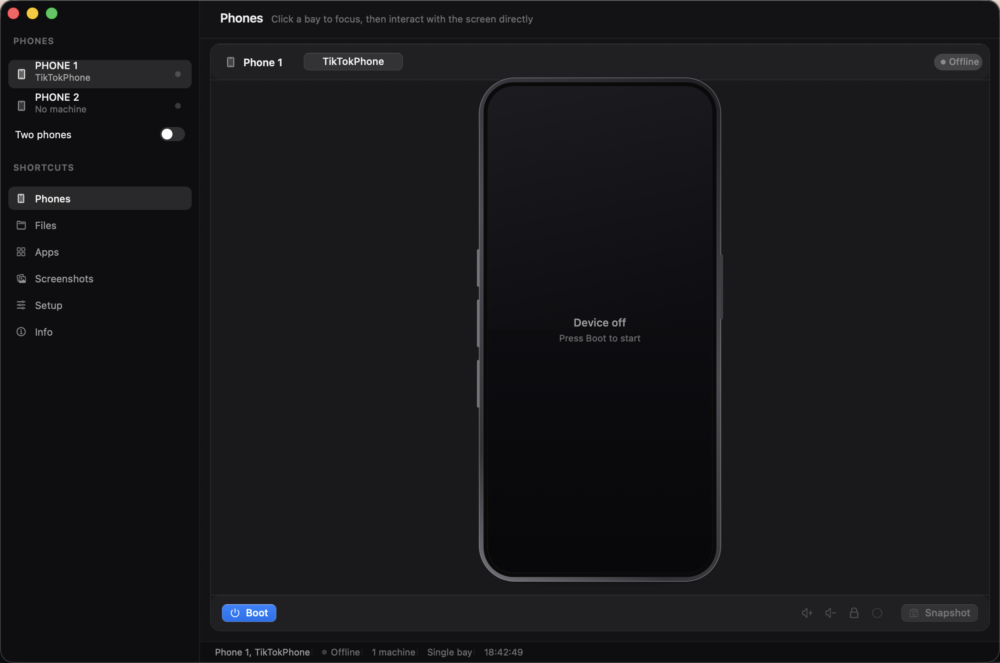
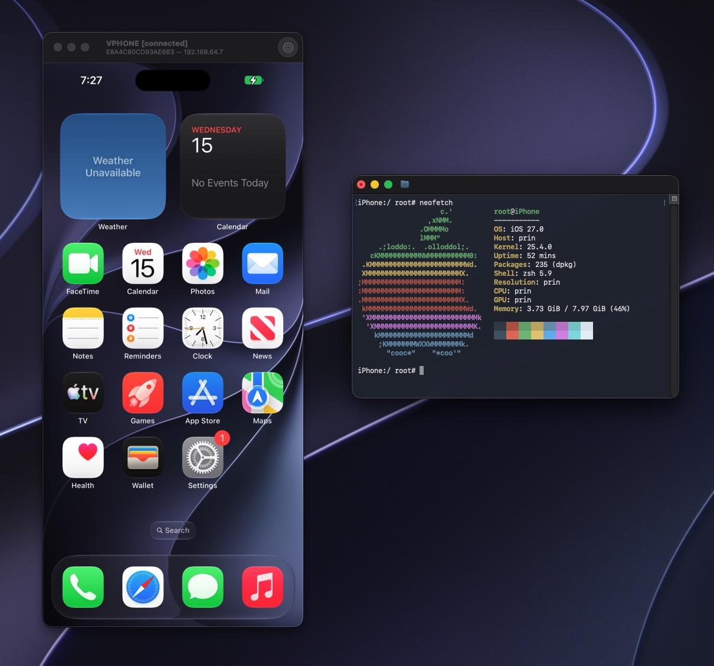
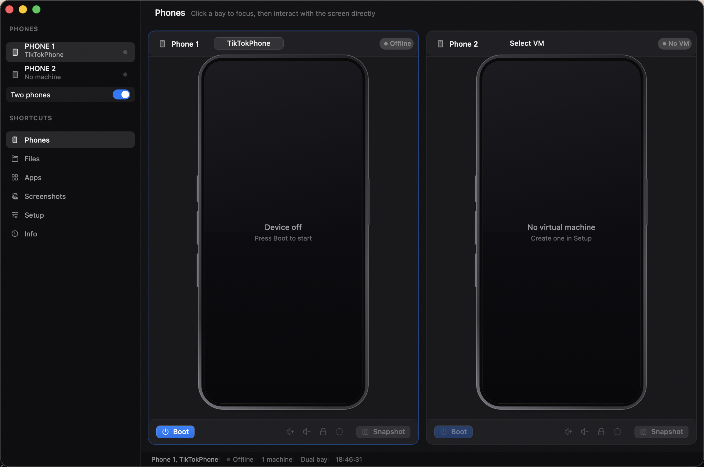
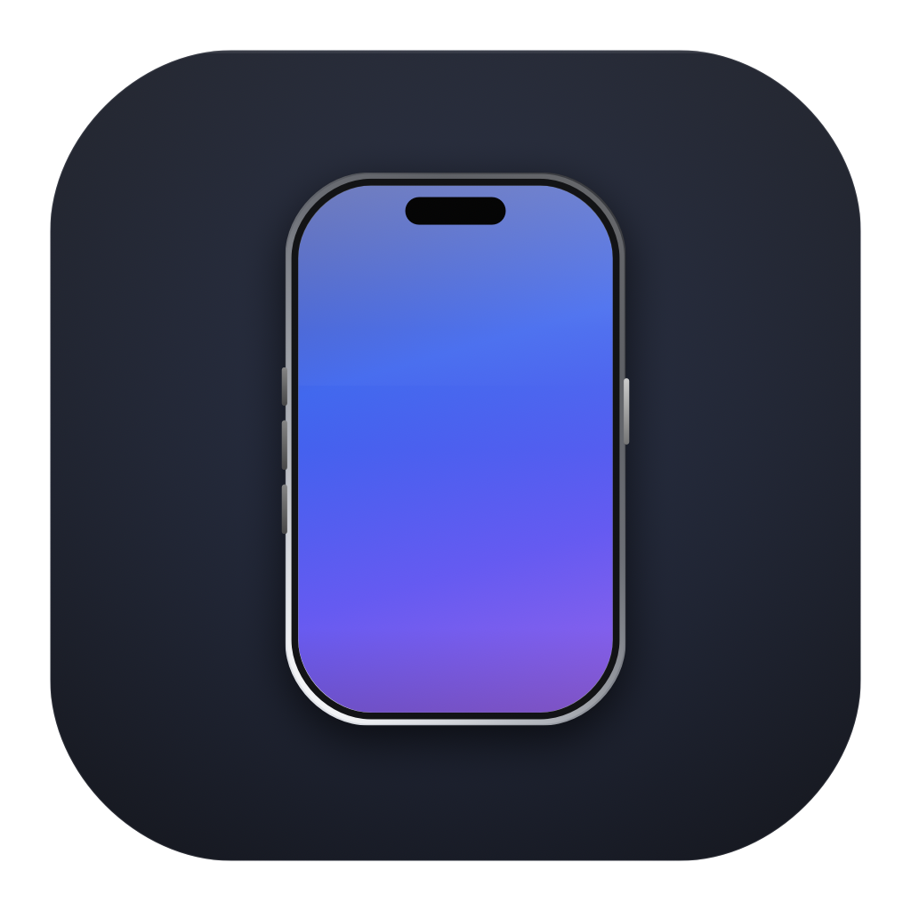

Your Mac can run an iPhone.
A jailbroken one.

A live screen you can tap and swipe.
Right click is the home button.
It boots real iOS firmware.

iOS 27 running in vphone-cli, the engine under the window.
Two phones, two disks.

Clone a machine in Setup, then put it in the second bay.

iPhoneEM
Jailbroken iPhones, in a window.
github.com/JelleBultiauw/IphoneEM